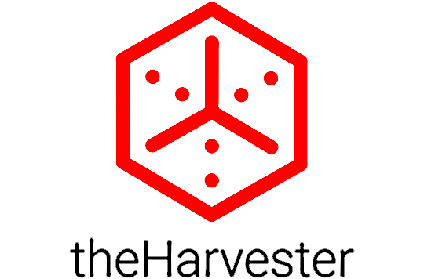
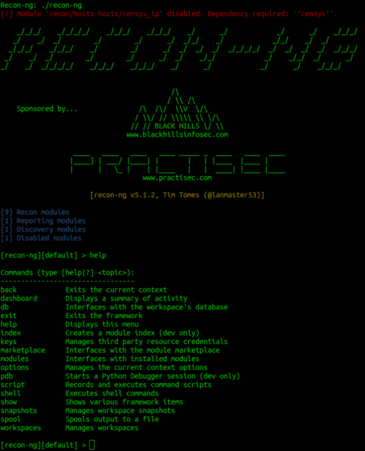
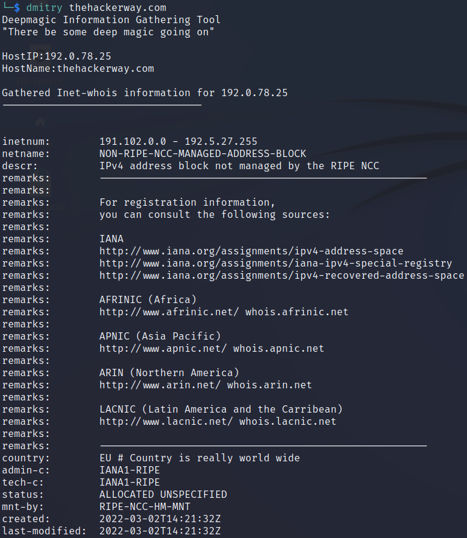
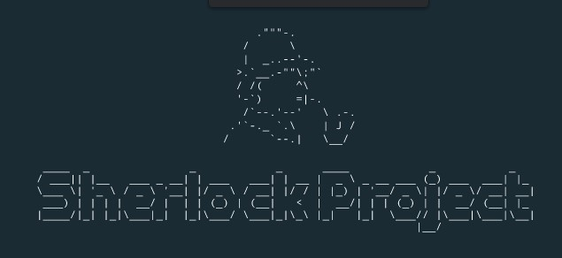
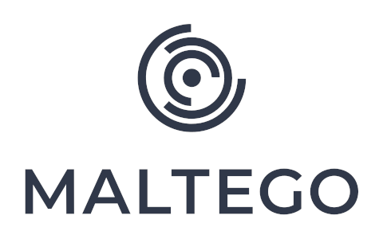

Menú
Tools
Herramientas
1. TheHarvester
La función principal de esta herramienta es brindar una recopilación de información valiosa sobre una entidad o dominion específico utilizando fuentes públicas y abiertas en línea. Click aquí
En resumen, "The Harvester" es una herramienta OSINT versátil que ayuda en la recopilación de información pública y abierta sobre un objetivo específico. Se utiliza principalmente para la investigación de seguridad, la evaluación de la superficie de ataque y la obtención de inteligencia en la ciberseguridad, pero también puede ser útil en otras áreas de OSINT y análisis de amenazas.
2. Recon-NG
Esta herramienta recuerda a otras como Metasploit Framework en donde se puede interactuar con un interprete de comandos, cargar módulos y ejecutarlos con una serie de opciones.Click aquí
Esta herramienta está diseñada para ayudar a los profesionales de seguridad cibernética y a los investigadores a obtener información valiosa sobre objetivos específicos a partir de fuentes públicas y abiertas en línea.

3. Dmitry:
Es conocida como "Deepmagic Information Gathering Tool" y está diseñada para obtener información detallada sobre sistemas y servicios en una red. Dmitry se utiliza comúnmente en la fase de reconocimiento de un proceso de pruebas de penetración o durante la investigación de seguridad. Click aquí

4. Sherlock
Sherlock se encarga de buscar nombres de usuario en redes sociales y enseña en la terminal los resultados de forma rápida y con un sistema de colores que facilita la lectura. Click aquí

5. Maltego
A partir de datos simples como nombres, direcciones o teléfonos, permite obtener una gran cantidad de información importante, lo que la ha convertido en una de las herramientas favoritas de los profesionales. Click aquí
